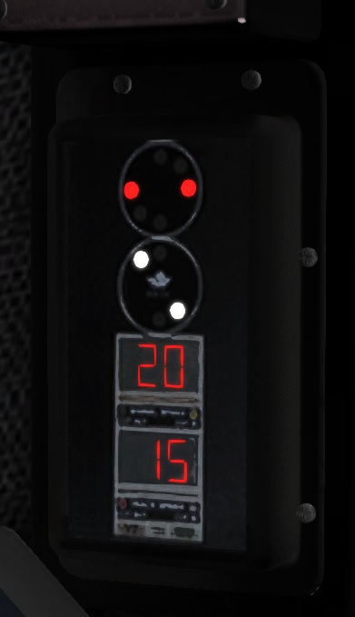

Driving on the NEC
All locomotives upgraded by the Open NEC Project include fully functional safety systems that are turned on by default. These systems are fully compatible with any of the various renditions of the Northeast Corridor, so a modded AEM-7, for example, can drive on the New Haven Line and the North Jersey Coast Line with fully functional ATC and ACSES.
Power change signals have also been implemented across the board, so locomotives will permanently cut their power if they enter a section of track incompatible with their source of power—for example, in the event that an AEM-7 enters a section without overhead catenary.
To operate a train safely on the Northeast Corridor, you need to be familiar with the following systems:
- The pulse code cab signaling system (CSS) in use on the corridor, which is derived from the original system deployed by the Pennsylvania Railroad.
- The Automatic Train Control (ATC) system, which enforces aspects and speed limits sent by the cab signaling system.
- The Advanced Civil Speed Enforcement System (ACSES), which enforces permanent track speed limits and can also bring the train to a halt in advance of a stop signal.
You also need to be familiar with the controls used to interact with them.
Aspect Display Unit (ADU)
The ADU is the cockpit display that shows the states of the CSS, ATC, and ACSES systems.
There are several styles of ADU in use on the Northeast Corridor, but they all have common elements. The cab signal display, which resembles a PRR-style circular signal head, communicates the current cab signal aspect in force. The "signal speed" display communicates the ATC-enforced speed limit. The "track speed" display communicates the ACSES-enforced speed limit. (Some ADU's combine the latter two displays.)
This is the ADU for the AEM-7. It is showing "Restricting" as the cab signal aspect, 20 mph for the signal speed, and 15 mph for the track speed:

Dovetail's models impose some limitations on the information that the ADU's can be programmed to display—for example, the track speed display on the AEM-7 cannot display certain numbers—so each locomotive has its own quirks. Please consult the locomotive notes pages for specific information.
Cab Signaling System (CSS)
The cab signal display communicates the signal aspect in force for the block the train is currently occupying. In other words—contrary to the behavior implemented by the classic Microsoft Train Simulator—it reflects the state of the signal last passed.
Cab signals on the modern Northeast Corridor communicate the following aspects:
| Aspect | Speed (mph) | Meaning |
|---|---|---|
| Clear/150 | 150 | Clear to proceed up to 150 mph. |
| Clear/125 | 125 | Clear to proceed up to 125 mph. |
| Clear/100 | 100 | Clear to proceed up to 100 mph. Used for high-density signaling around New York. |
| Cab Speed/80 | 80 | Clear to proceed up to 80 mph. |
| Cab Speed/60 | 60 | Clear to proceed up to 60 mph. |
| Approach Limited | 45 | Slow to 45 mph, then slow to 30 mph before the next signal. |
| Approach | 30 | Slow to 30 mph, then prepare to stop at the next signal. |
| Restricting | 20 | Slow to 20 mph, then prepare to stop. Also the failsafe state. |
Cab signals inform the ATC system of the current signal speed limit to enforce. In addition, if the current cab signal is "Approach" or "Restricting," ACSES will detect and enforce a stop in advance of a signal head reading "Danger."
Automatic Train Control (ATC)
ATC enforces the speed limit imposed by the cab signal aspect in force.
When the current cab signal aspect changes, if the new aspect is less restrictive than the previous one (an "upgrade"), then an informational tone will sound that you do not need to acknowledge.
If the new aspect is more restrictive than the last one in force (a "downgrade"), an alarm will sound, even if you are not violating the newly imposed speed limit. You must acknowledge (Q) this alarm within 6 seconds, or else a penalty brake will be applied.
If you are above the downgraded aspect's speed limit, then in addition to acknowledging the alarm, you must also begin to slow the train and reach the -0.5 miles/hour/second rate within the 6 second countdown. Once the alarm is acknowledged and this rate is reached, the alarm will extinguish. You then have another 6 seconds to reach and maintain the -1.5 miles/hour/second deceleration rate, which is called the "suppression" rate. Failure to perform any of these steps will result in a penalty brake application.
If you face a penalty brake application imposed by ATC, you must wait until the train comes to a complete stop. Then you can acknowledge the penalty and release the brakes.
Advanced Civil Speed Enforcement System (ACSES)
ACSES enforces permanent track speed limits. It uses the positions of upcoming speed limits to calculate a continuous braking curve that keeps the train within safe limits at all times.
Once your locomotive passes a posted speed limit increase, you may be surprised to find that ACSES upgrades the displayed track speed limit immediately. This is because—unlike Train Simulator itself—ACSES does not take into account the length of your train. It is your responsibility not to increase your speed until the rear of your train has cleared the previous speed restriction.
As your train approaches a posted speed limit decrease, ACSES will calculate the last possible moment at which it can apply a penalty brake application and still keep the train within safe limits. This trigger speed, which resembles a line that slopes down to the upcoming speed restriction if graphed over time, is called the "penalty curve." In addition, ACSES calculates a braking curve approximately 8 seconds in advance of the penalty curve called the "alert curve."
If you violate the alert curve, ACSES will display the upcoming speed limit on the track speed display and sound an alarm (that you can extinguish by acknowledging it), prompting you to slow down. If you violate the penalty curve, ACSES will apply a penalty brake that you can release once you are in compliance with the lower speed limit.
If the track speed limit changes, but you are already in compliance with the new limit, ACSES will sound an informational tone that does not need to be acknowledged.
ACSES will also halt the train in advance of any "Danger" signal, an act that is called a "positive stop." The positive stop functionality is activated whenever the cab signaling system reads "Approach" or "Restricting." When ACSES imposes a positive stop, you will receive alert and penalty curves that read "0 mph." You can release the positive stop once the signal upgrades from "Danger."